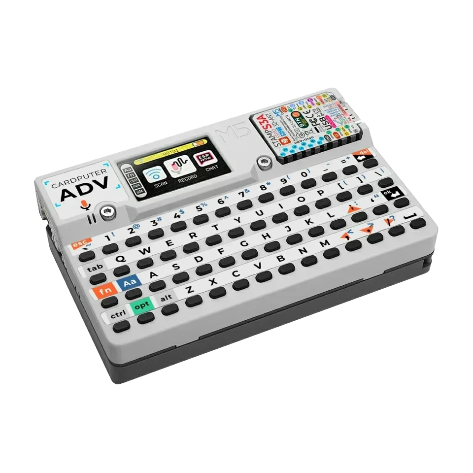
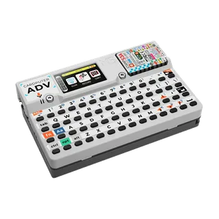
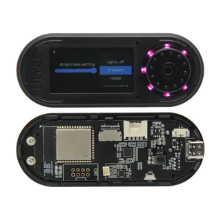
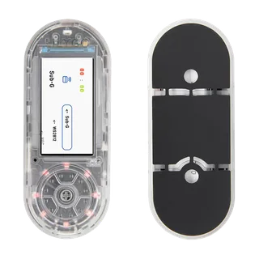
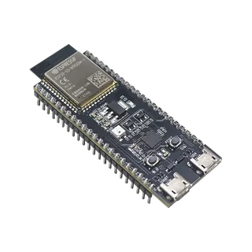
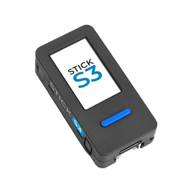
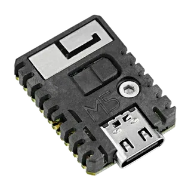
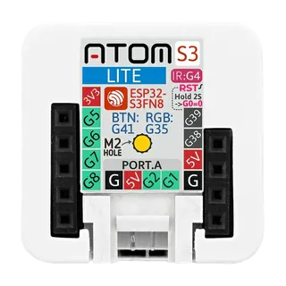
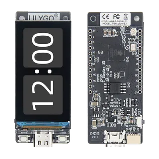
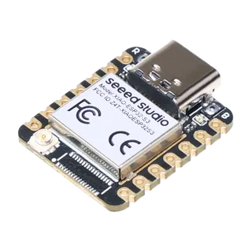

supported ESP32-S3 targets
ESP32-S3 board guides for firmware and hardware debugging
Choose a supported ESP32-S3 board before flashing Bit Pirate. This section helps you compare devices, development boards and radio-ready targets, then follow the right wiring, module and protocol guides.

board landing pages
Choose a supported board
Use these ESP32-S3 board guides to compare supported Bit Pirate targets, check board-specific limits, and find the right one.
M5Stack Cardputer
portablePortable screen, keyboard, SD and battery target for field UART, I2C, SPI, GPIO, infrared and standalone workflows.

M5Stack Cardputer ADV
recommended portablemore exposed GPIOPortable use with Grove/Header access and more room for GPIO experiments than the classic Cardputer.

LILYGO T-Embed S3
display benchScreen, encoder, SD and Grove/Header access for handheld bench work without the integrated CC1101 radio variant.

LILYGO T-Embed S3 CC1101
Sub-GHz / CC1101Integrated CC1101 route for Sub-GHz scan, receive and lab capture workflows, with tighter GPIO availability.
LILYGO T-Embed CC1101 Plus
CC1101 + NRF24CC1101 Plus variant for integrated Sub-GHz and RF24 workflows with CC1101, NRF24, PN532, IR, SD card and battery hardware.

ESP32-S3 DevKit
recommended benchBest generic GPIO workbench option with accessible pins and a clean path into Dock and adapter workflows.

M5StickS3
compact handheldCompact battery board with screen, buttons, IMU and IR for quick serial and GPIO checks in a small handheld format.

M5Stack StampS3
tiny integrationSmall integration module with exposed pins for fixtures and embedded setups where the carrier defines access.

M5 AtomS3 Lite
tiny Grove targetTiny Grove/Header target with IR TX and one button for simple portable checks and embedded fixtures.

LILYGO T-Display S3
display statusDisplay-focused board with Qwiic and buttons for visible status workflows while keeping a moderate GPIO set.

Seeed Studio XIAO ESP32-S3
tiny exposed pinsCompact exposed-pin ESP32-S3 option for tiny fixtures and breadboard experiments when pin mapping is verified first.
workflow fit
Choose the right board
Pick by workflow first, not by logo. The best Bit Pirate target is the board whose physical interface matches the job.
Start with Cardputer ADV when a screen, keyboard, battery and SD card make the tool easier to use. Choose DevKit when you need more freedom.
Use T-Embed CC1101 when integrated radio workflows are the priority. Use DevKit plus a module when you want more wiring control.
Use ESP32-S3 DevKit for raw wiring, Dock use, SPI flash clips, I2C fixtures and experiments that need many pins.
Use StampS3, AtomS3 Lite, M5StickS3 or XIAO ESP32-S3 when the Bit Pirate device must fit inside a small setup.
related guides
Related hardware resources
Boards are the entry point, modules are the target, protocols are the firmware mode, and recipes turn the setup into a concrete bench action.
Dock, adapters, logic-level notes and hardware expansion paths.
Modules and target chipsCC1101, MCP2515, SPI flash, EEPROM, smartcards, W5500 and more.
Web FlasherFlash the hosted firmware for each supported board.
ProtocolsI2C, SPI, UART, DIO, Sub-GHz, USB adapters and more.
RecipesTask-based wiring and debugging guides.
Web ToolsBrowser serial, SPI flash, logic analyzer and scripting tools.

source project
Part of the ESP32 Bit Pirate ecosystem
ESP32 Bit Pirate combines ESP32-S3 firmware, Web Flasher manifests, browser tools, protocol pages, recipes, supported boards, modules and companion hardware. These board pages help people discover the open-source Bit Pirate project from the board they already own or want to flash.